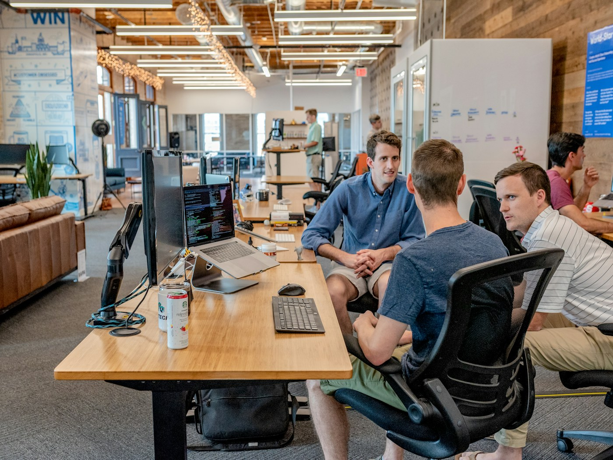

01
Operational Strategy & Performance
Improve how your business operates.
Find what is slowing you down and build a practical path to stronger performance.
- Operational assessments
- Process & organizational improvement
- Performance & growth readiness
Strategy, execution, and operational leadership to help your business perform and grow.
Book a Free Discovery Call ↗A conversation about your needs. No obligation.
Choose the support you need. We shape the engagement around your priorities.
Find what is slowing you down and build a practical path to stronger performance.
Bring structure, accountability, and hands-on support to critical projects and operational change.
An embedded operational partner who works alongside your team to manage priorities and drive improvement.
Every engagement starts with understanding your business.
We discuss your challenges, goals, and the support your business needs.
You receive a tailored proposal outlining scope, deliverables, timeline, and fees. We agree on the plan before work begins.
We work alongside your team, with clear priorities, regular check-ins, and progress you can see.
You don’t need to know which service fits. We’ll start there together.